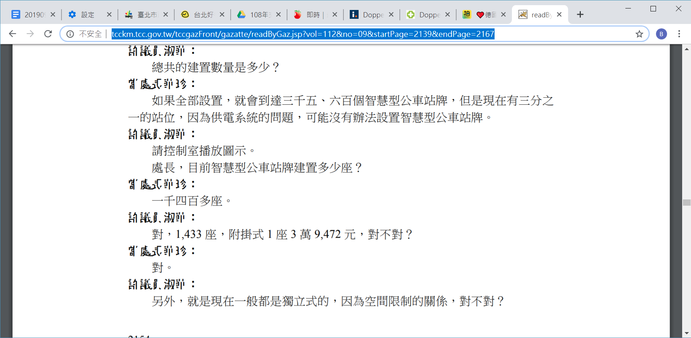
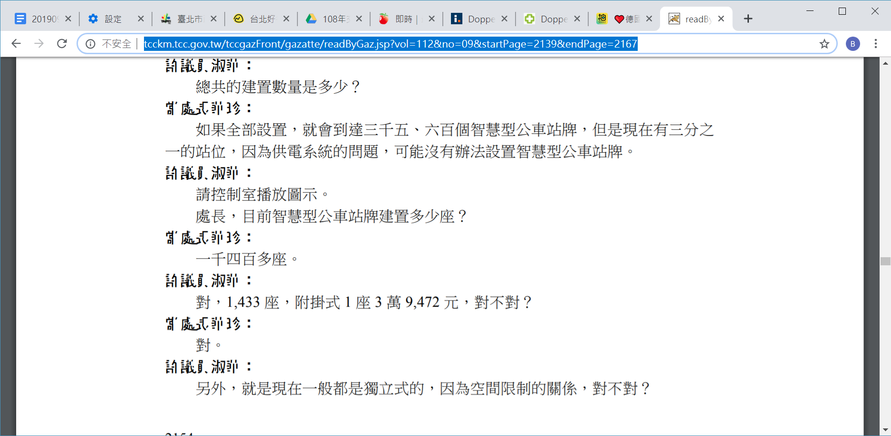

Posted by Wei-An 謝維安 · Sep 11, 2019 at 2:03 PM 台北好行 視障好行App測試計畫 掃描文件連結：https://drive.google.com/drive/folders/1koOfzQT7YpMw0uXXf5ckkJUZBB3B6wS3?fbclid=IwAR0-5L3NeXOo3t1zHoORswnnyjUQKAMrEFsmDD6ww4mShAYYjxvOMTiuLLA由北市交通局提供，因尚未實施請勿外流，僅供團隊內設計參考，謝謝。 Comments & Events A-Bao, 計畫伴隨者 綜整一下目前台北市這個案子的重點：臺北好行APP擴充視障應用功能（含候車亭CMS面板模組建置及公車通訊功能整合），計畫自5月發包出去後內容有動態性的調整內容，但目前確認是9月開始進行視障應用功能的測試。 要測試的是 1. 共六處安裝可訂車的CMS面板候車亭，會有18人次測試 2. 共二處有DSRC的候車亭，會有2人次測試 第一階段測是9/20完成，會請廠商依測試結果調整，於10月中下旬進行第二階段的修正測試。 -流程：視障者先在家透過APP查好路線及班次與預設好上下車站名，將內容儲存。走到車站亭/牌時，才送出預訂車的訊號。-訂車：有二種方式（視站亭裝置）： 1. 一種是透過CMS面板，訂車班次秀在面板上（會抓幾分鐘後到班之班次），抓到班次會透過APP告知視障者，訂的班次大約幾分鐘後到站。（此種方式類似視障者舉手作牌的概念，以CMS面板取代手作牌。但缺點是該班次司機其實並無法得知自己是被指訂之車次，因此司機可能會未停車或未辨識出有視障者等候直接開走。車子開走後視障者會由APP得知，該班車已離站訊息，CMS上之訂車訊號會自動消失。視障者可以再重複啟動訂車流程） 2. 另一種則是透過DSRC訊號，到站後送出訂車訊息，訂車資訊會直接到有裝DSRC接收裝置之車上，司機可以明確知道自己是被預訂之班次。（此種方式雖明確，但缺點是DSRC布建成本高，目前僅少數路口及公車上有設置，因DSRC主要布建目的是為智慧路口） 二種方式受限於須先有硬體裝置才可以訂車，可能短期內要擴大全市及複製至全面有其難度。DSRC的成本可能大規模採購一處路口裝置須5萬上下（預估值，非精確數目）。至於CMS面板的成本，我找到了去年107年台北市議會議員質詢的逐字稿（也 因該次會議而有了後來的此改善視障者搭車的試行案），裡面有提到成本以及就算建置了，也要考慮用電的問題。提供大家參考。  image.png 358 KB • Download Sep 12, 2019 at 5:42 AM Notified 17 people A-Bao, 計畫伴隨者 台北好行ＡＰＰ改版相關計畫招標公告（請參工作項目說明）.doc 6.83 MB • Download Sep 15, 2019 at 11:52 PM Notified 17 people A-Bao, 計畫伴隨者 維安，上面這是台北好行當初招標計畫的公告，在工作項目表格內有說明該項目應要做的事，若有問題可以隨時打給我或依寧討論。謝謝！ Sep 15, 2019 at 11:54 PM Notified 17 people
A-Bao, 計畫伴隨者 綜整一下目前台北市這個案子的重點：臺北好行APP擴充視障應用功能（含候車亭CMS面板模組建置及公車通訊功能整合），計畫自5月發包出去後內容有動態性的調整內容，但目前確認是9月開始進行視障應用功能的測試。 要測試的是 1. 共六處安裝可訂車的CMS面板候車亭，會有18人次測試 2. 共二處有DSRC的候車亭，會有2人次測試 第一階段測是9/20完成，會請廠商依測試結果調整，於10月中下旬進行第二階段的修正測試。 -流程：視障者先在家透過APP查好路線及班次與預設好上下車站名，將內容儲存。走到車站亭/牌時，才送出預訂車的訊號。-訂車：有二種方式（視站亭裝置）： 1. 一種是透過CMS面板，訂車班次秀在面板上（會抓幾分鐘後到班之班次），抓到班次會透過APP告知視障者，訂的班次大約幾分鐘後到站。（此種方式類似視障者舉手作牌的概念，以CMS面板取代手作牌。但缺點是該班次司機其實並無法得知自己是被指訂之車次，因此司機可能會未停車或未辨識出有視障者等候直接開走。車子開走後視障者會由APP得知，該班車已離站訊息，CMS上之訂車訊號會自動消失。視障者可以再重複啟動訂車流程） 2. 另一種則是透過DSRC訊號，到站後送出訂車訊息，訂車資訊會直接到有裝DSRC接收裝置之車上，司機可以明確知道自己是被預訂之班次。（此種方式雖明確，但缺點是DSRC布建成本高，目前僅少數路口及公車上有設置，因DSRC主要布建目的是為智慧路口） 二種方式受限於須先有硬體裝置才可以訂車，可能短期內要擴大全市及複製至全面有其難度。DSRC的成本可能大規模採購一處路口裝置須5萬上下（預估值，非精確數目）。至於CMS面板的成本，我找到了去年107年台北市議會議員質詢的逐字稿（也 因該次會議而有了後來的此改善視障者搭車的試行案），裡面有提到成本以及就算建置了，也要考慮用電的問題。提供大家參考。  image.png 358 KB • Download Sep 12, 2019 at 5:42 AM Notified 17 people
A-Bao, 計畫伴隨者 台北好行ＡＰＰ改版相關計畫招標公告（請參工作項目說明）.doc 6.83 MB • Download Sep 15, 2019 at 11:52 PM Notified 17 people
A-Bao, 計畫伴隨者 維安，上面這是台北好行當初招標計畫的公告，在工作項目表格內有說明該項目應要做的事，若有問題可以隨時打給我或依寧討論。謝謝！ Sep 15, 2019 at 11:54 PM Notified 17 people
臺北好行APP擴充視障應用功能（含候車亭CMS面板模組建置及公車通訊功能整合），計畫自5月發包出去後內容有動態性的調整內容，但目前確認是9月開始進行視障應用功能的測試。
第一階段測是9/20完成，會請廠商依測試結果調整，於10月中下旬進行第二階段的修正測試。
-流程：視障者先在家透過APP查好路線及班次與預設好上下車站名，將內容儲存。走到車站亭/牌時，才送出預訂車的訊號。
-訂車：有二種方式（視站亭裝置）：
2. 另一種則是透過DSRC訊號，到站後送出訂車訊息，訂車資訊會直接到有裝DSRC接收裝置之車上，司機可以明確知道自己是被預訂之班次。（此種方式雖明確，但缺點是DSRC布建成本高，目前僅少數路口及公車上有設置，因DSRC主要布建目的是為智慧路口）
二種方式受限於須先有硬體裝置才可以訂車，可能短期內要擴大全市及複製至全面有其難度。DSRC的成本可能大規模採購一處路口裝置須5萬上下（預估值，非精確數目）。至於CMS面板的成本，我找到了去年107年台北市議會議員質詢的逐字稿（也 因該次會議而有了後來的此改善視障者搭車的試行案），裡面有提到成本以及就算建置了，也要考慮用電的問題。提供大家參考。